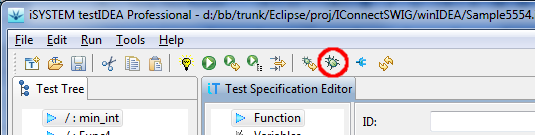
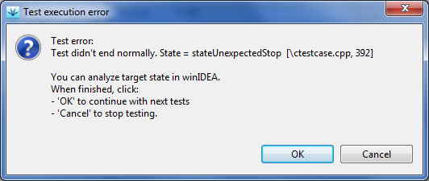
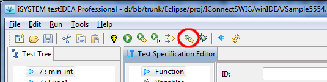

Debugging tests
It may happen, that test results do not match our expectations. If
the tested function is not trivial, we can use debugger to step
through the function and examine variables. However, if we simply
set a breakpoint in the function, it will be detected as invalid
test termination and the test will end. This means
that winIDEA will restore target state as it was
before the test run. To avoid this and enable debugging, we can
set the debug mode flag in testIDEA. It is shown as toggle
button in the testIDEA toolbar:

Procedure for debugging is therefore the following:
- set debug mode in testIDEA
- set a breakpoint in winIDEA
- run the test
- when the following dialog appears in testIDEA, you
can debug the function in winIDEA:

- when debugging is finished, click
OK to execute next tests
(if there are any selected), or Cancel to terminate
testing.
Quick debug
The debug functionality described above is flexible, but requires
several operations to start debugging. To make things easier in
the common situation, when we want to debug a function from the
beginning, a single click debug mode has been added to
testIDEA. Button called Quick debug button is
located on the testIDEA toolbar:

With a single click the target is initialized for execution of the test,
which is currently selected in the test specification tree, then
execution point is set to function start, and focus is set to
winIDEA.
Now everything is ready for debugging.
Debugging tests with test-points and stubs
If tests contain test-points and stubs, we usually want them to
get applied during debugging, so that target state matches state
during normal test run. However, when we manually step through
application code in winIDEA, testIDEA has no control and can not
apply test points and stubs. To avoid this, we should not step in
winIDEA, but do the following:
- set breakpoint in winIDEA on the next location, where we'd
like to stop (to investigate values of variables, for example).
- Press button OK testIDEA dialog, to continue with test.
If stub or test-point will be encountered during the run, they
will be applied.
Note: Do not modify breakpoints set by testIDEA for stubs
and test-points!